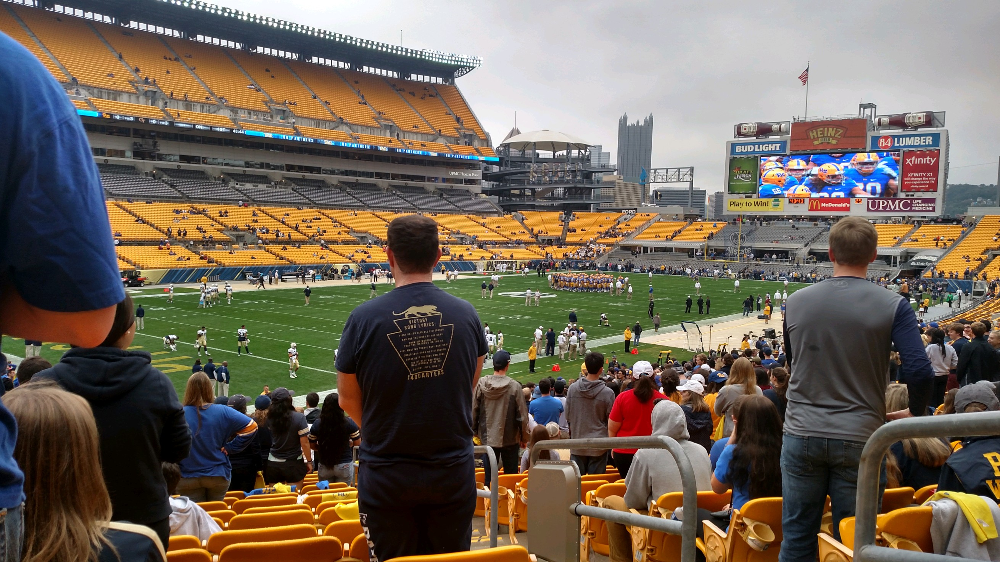

Heinz Field
This almost 20 year old stadium is located in the North Shore. It holds games for the Pittsburgh Steelers, as well as the Pittsburgh Panthers. It is the predecessor of Steelers' previous stadium, Three Rivers Stadium. The total cost of construction totals about 400 million dollars accounting for today's inflation. The stadium itself puts the city's history of steel production on display, boasting 12,000 tons of steel used in construction. Initial construction of the stadium began in 1999 and finally saw fruition in 2001.
